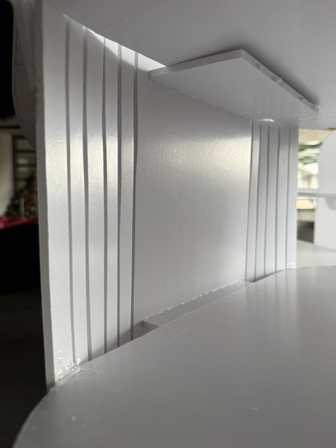
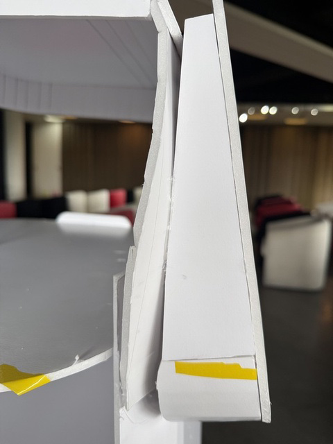
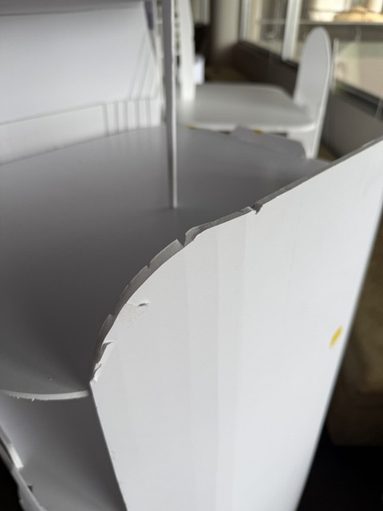
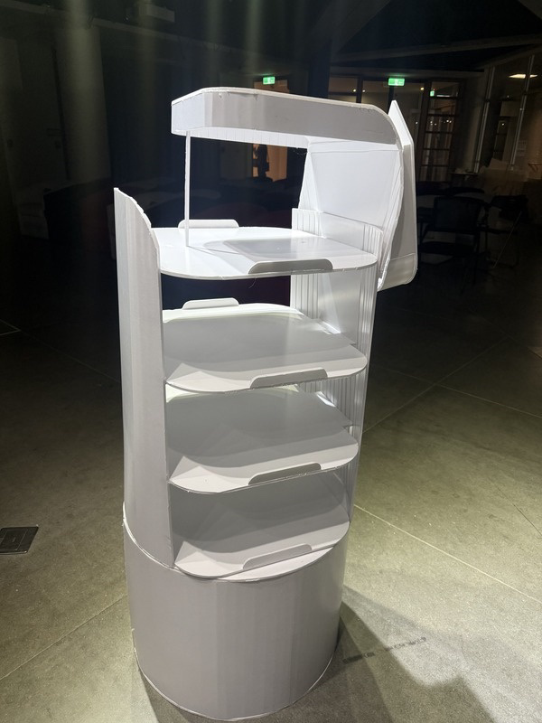
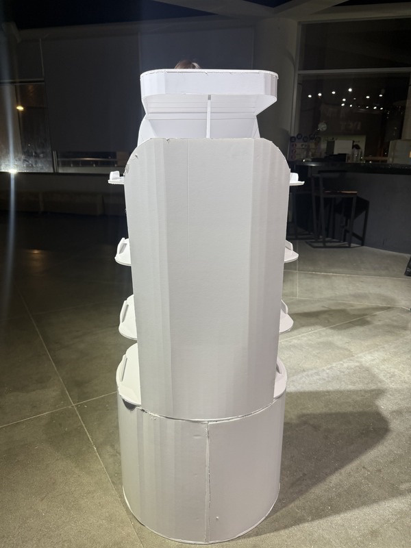
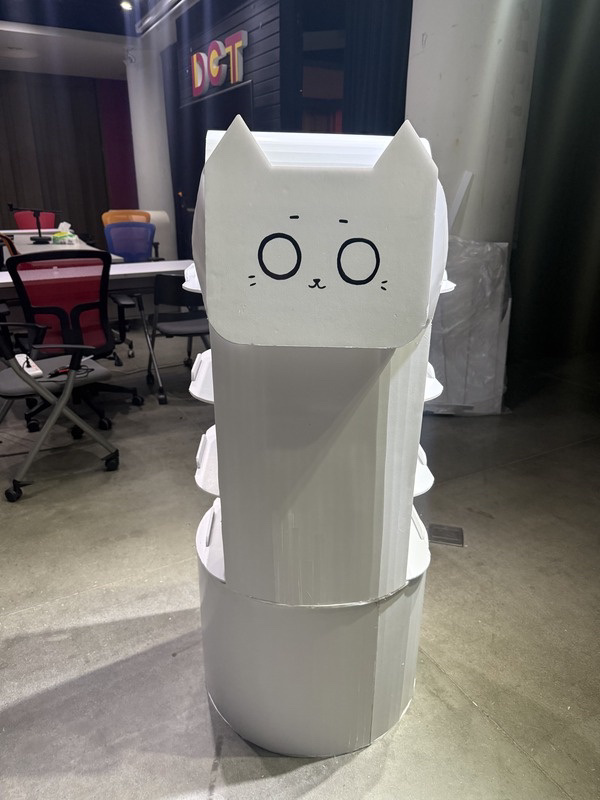

We built prototypes with different materials to strengthen our understanding of material properties and fabrication techniques — learning by cutting, shaping and assembling, hands first.
A foam-board delivery-robot model, built to learn the fundamentals of physical prototyping.
Recreating BellaBot in foam board pushed us to master techniques that flat models never demand — turning rigid sheets into smooth, rounded forms.



Scoring and cutting clean circular sections from flat foam board.
Softening hard corners into the gentle radii a service robot needs.
Bending and joining panels into continuous, cylindrical bodies.
During the course we built full-scale, 1:1 prototypes of our physical models — testing real proportions, presence and human scale.
Working at 1:1 changes everything — how a robot reads in a real space, how tall it stands beside a person, and whether the form actually holds together. These full-scale builds let us feel the design, not just picture it.


